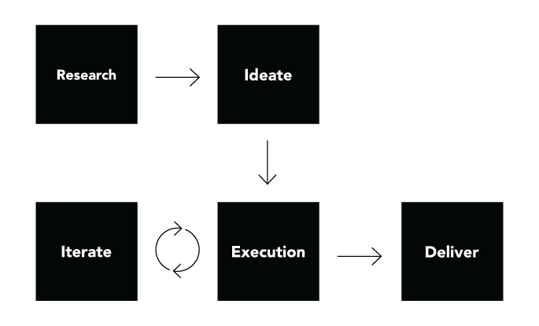

Tremor rebrand
2018 - 2019 • Company rebrand • California
Team
- Oscar DeLeon, Art director/Designer
- Les Seifer, Head of creative
- Jesse Fink, Director of creative strategy
Deliverables
- Mark
- Brand guidelines
- Motion graphics
How I navigated dozens of visuals to create a single logo
I set out to create a mark that could be used on its own while also devising the company’s new brand guidelines.
Design goal
The goal of this project was to design a new brand identity for Tremor Video; one that could also be used as a stand-alone mark, conveying their fun and multifaceted video ad solutions.
Challenges
When I was asked to rebrand Tremor Video, I was presented with an exhaustive list of visual
requests. I had to convince them that they should focus on a “big idea” that would communicate
what
they do with one simple image. Two questions came to mind:
• What type of image would we get if we fused the words “Tremor” and “Video”?
• What instinctively pops into my mind when I hear the word “Tremor”?
Process

Approach
Parameters were introduced from the stakeholders, mostly to emphasize concepts like video,
all-screens and media cohesion.
Working from this point and calling back to the initial two challenge questions, I landed on a
simple idea: Ripples. Immediately, a powerful image stood out to me: The rice terraces in Muong
Hoa
Valley, Vietnam.

I found balance between literal and abstract, dividing the given parameters into two groups:
Design Conventions and Abstract Concepts.
Design Conventions include concepts that most people would recognize easily
such as
mobile/desktop video, television or other iconography that would be associated with these ideas.
Abstract Concepts include an approach to layers or levels that represent the
different services Tremor offers in the marketplace, flexibility for creative solutions,
multiple-screens and also to drive the idea of fun and approachability.
The clean lines, multi-layered levels, and simple beauty of the rice terraces led me to the
solution: Deconstruct and isolate the ideas of what the parameters were, but at the same time
eliminate some concepts that were unnecessary or redundant. In the end, I was able to push
through
the noise to the core concept, delivering a simple design that spoke volumes.
Mark

Motion